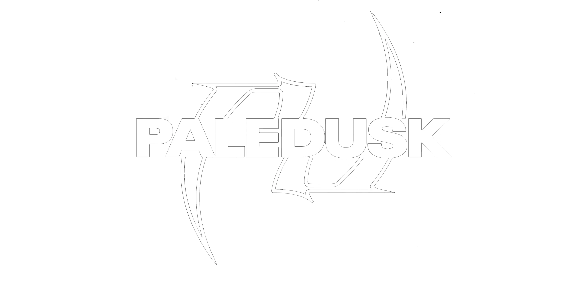

|

UNOFFICIAL FANPAGE
|
|
| Instagram | X (Twitter) | YouTube | Spotify | |
WHO IS PALEDUSK?Paledusk adalah band metalcore/electronic eksperimental yang dibentuk pada tahun 2015 di Fukuoka, Jepang. Mereka dikenal luas di industri musik cadas internasional karena berhasil mendobrak batas musik keras tradisional melalui kombinasi genre yang sangat berani dan tak terduga. Musik mereka menawarkan energi yang agresif namun terstruktur secara genius, memadukan distorsi gitar yang berat dengan ketukan electronic, unsur hip-hop, dan vokal yang eksplosif. Kolaborasi mereka dengan berbagai produser internasional serta elemen visual yang nyentrik menjadikan karakter Paledusk sangat segar dan unik di era modern. Lagu-lagu kesukaan yang direkomendasikan oleh pembuat website ini adalah SLAY, HUGS, NO!, RUMBLE, dan masih banyak lagi trek banger lainnya yang wajib kamu dengarkan untuk merasakan energi liar khas Fukuoka. SAMPLE TRACK: NO!
|
|
| @CopyRight 2026 - kalef | |